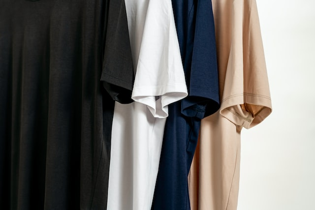
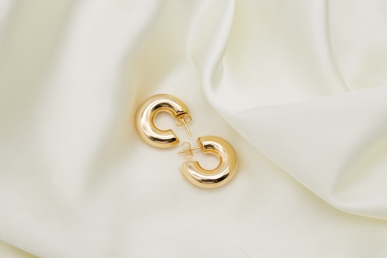
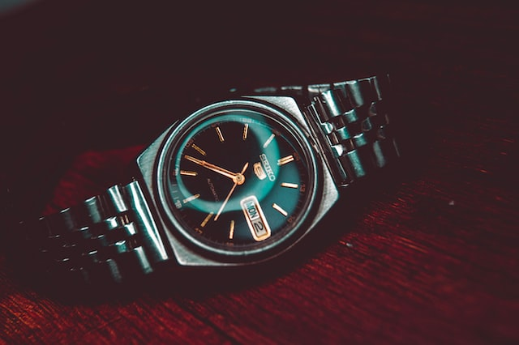
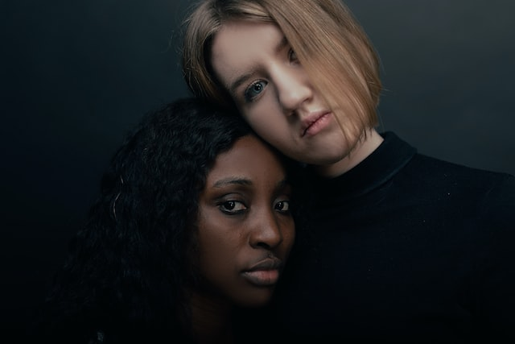
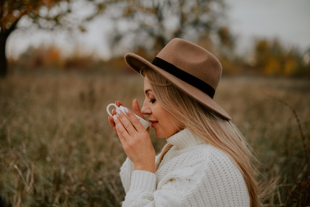

1
2
3
4
1
2
3
4
1
2
3
4
1
2
2
2
3
4
1
2
3
4
flex-direction/hover/
1
2
3
4
The Best Celebrity Halloween Costumes
READ MORE
Other noteworthy moments from previous years include Hailey Bieber paying
homage to Britney Spears, Rihanna as the rapper Gunna, and Anderson Paak
dressing up as the album covers of Stevie Wonder, Prince and Bruno Mars.

Collaborations hold serious fashion currency.
Two brands who don’t need us to tell them that? Ganni and Barbour.
click here

Blinged-out accessories
(chainmail! Rhinestones!) can be found at Paco Rabanne,
Benedetta Bruzziches and Cult Gaia – the perfect partners for a
Christmas party dress. Meanwhile, whispering the name of fashion insiders’ new go-to evening bag brands (Kara, 16Arlington) into the ear of fellow party guests will definitely get your name on Santa’s “nice” list.
click here
What’s Your Horoscope This Week?
Astrologer Alice Bell forecasts for love, money, career,
style and more every Tuesday. This week you will be continuing
to build upon whatever was started around the Scorpio solar eclipse
on 25 October. From Monday through Wednesday the moon is moving through
Aquarius, coming into contact with Saturn. You may have a heavier workload
and numerous responsibilities to attend to, but fortunately you will feel more
grounded and focused.

On Thursday and Friday, the moon will move through Pisces and
meet up with Jupiter. You may be emotionally sensitive, or you could
be feeling everything more intensely than usual. On the other hand, you
might get a positive boost of energy, or be optimistic and open minded to
hearing about different opinions and beliefs. You could also be leaning into
your creativity, or be more prone to daydreaming and following your intuition.
Finally, you may have the urge to be compassionate and giving towards others.
On Thursday and Friday, the moon will move through Pisces and meet up with Jupiter.
You may be emotionally sensitive, or you could be feeling everything more intensely
than usual. On the other hand, you might get a positive boost of energy, or be optimistic
and open minded to hearing about different opinions and beliefs. You could also be leaning
into your creativity, or be more prone to daydreaming and following your intuition. Finally,
you may have the urge to be compassionate and giving towards others.
You may be emotional about money this week, Capricorn, with the moon in Aquarius.
Numerous expenses might be popping up, or you could be splurging on clothing or
beauty products. You may also be putting energy into work projects or building a
business, and you may be asserting your own ideas at your job. As the moon moves
into Pisces later this week, you could be reading a lot, journalling, or teaching
yourself a new skill. You may also be meeting up with friends, and you will be
excited to mingle and trade ideas with people.

You will be staying close to home this week, Scorpio,
with the moon in Aquarius. You may be connecting with your
family, or you’re taking on family related responsibilities.
You could also want to decorate your home, or you may feel
introverted and want to keep to yourself. As the moon moves
into Pisces later in the week, you will feel more playful and
fun. You might be mingling with friends, or immersing yourself
in a passion project. You will be feeling confident in how you
express yourself, and you will want to show off your unique talents.

You will be staying close to home this week, Scorpio,
with the moon in Aquarius. You may be connecting with your
family, or you’re taking on family related responsibilities.
You could also want to decorate your home, or you may feel
introverted and want to keep to yourself. As the moon moves
into Pisces later in the week, you will feel more playful and
fun. You might be mingling with friends, or immersing yourself
in a passion project. You will be feeling confident in how you
express yourself, and you will want to show off your unique talents.
You will be staying close to home this week, Scorpio,
with the moon in Aquarius. You may be connecting with your
family, or you’re taking on family related responsibilities.
You could also want to decorate your home, or you may feel
introverted and want to keep to yourself. As the moon moves
into Pisces later in the week, you will feel more playful and
fun. You might be mingling with friends, or immersing yourself
in a passion project. You will be feeling confident in how you
express yourself, and you will want to show off your unique talents.